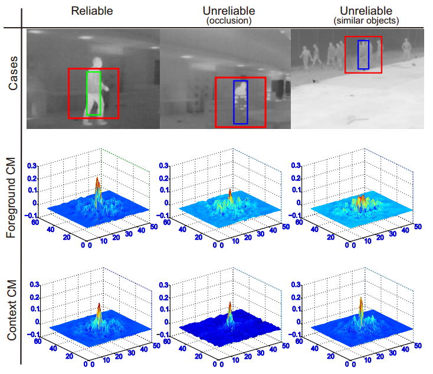
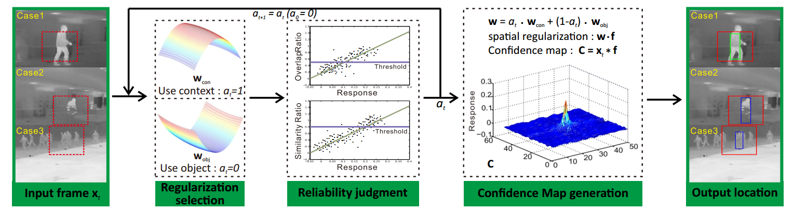
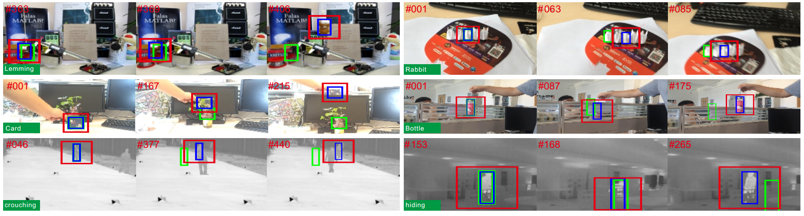

Selective Object and Context Tracking
1Ce Zhou 1Qing Guo* 1Liang Wan 1Wei Feng
1Tianjin University

Figure 1: Each column represents a case with two confidence maps, i.e. Foreground CM and Context CM, generated by foreground appearance model and context appearance model, respectively. Green and blue bounding boxes are the target locations generated by Foreground CM and Context CM, respectively. The red bounding boxes excluding the green or blue boxes represent the range of context.
Abstract
Robust appearance model is significantly important to stateof-the-art trackers. However, such trackers highly rely on the reliability of foreground appearance model. When the foreground is seriously occluded or the scene contains multiple objects with similar appearance, such foundation is destroyed. To extend the ability of trackers to handle these difficulties, we propose selective object and context tracking to locate the target according to the reliability of the foreground appearance model which is determined by two measures about whether the target is occluded or surrounded by similar objects. Extensive experiments show that our method achieves better performance than state-of-the-art trackers on VOT TIR- 2015 dataset and is able to track the target even when the foreground appearance is completely unreliable.
Introduction
In this paper, we propose selective object and context tracking to locate the target. Specifically, we learn two appearance models by selectively regularizing the foregroundand the context. Then, we propose two measures to judge the reliability of foreground appearance model w.r.t whether the target is occluded or surrounded by multiple similar objects. If the foreground appearance model is unreliable, we use the context appearance model to track the object. Our method achieves the best performance on VOT TIR-2015 dataset comparing with several other state-of-the-art trackers.
Framework

Figure 2: Algorithm flow of the proposed tracker. Case1: reliable appearance, case2: object occlusion, case3: multiple similar objects. Given input frame t with a red dotted bounding box as candidate search region, we obtain a confidence map by selectively using object and context models, i.e. wobj and wcon. The selection is determined by a process of reliability judgment w.r.t. the confidence map generated by wobj.
Tracking Results

Figure 3: Some tracking results comparison between SOCT (blue box) and SRDCF (green box).
Citation - BibTeX
Selective Object and Context Tracking
Ce Zhou, Qing Guo*, Liang Wang, Wei Feng. Selective Object and Context Tracking.
In ICASSP 2017.(CCF-B).
[ PDF ]
[ BibTeX ]